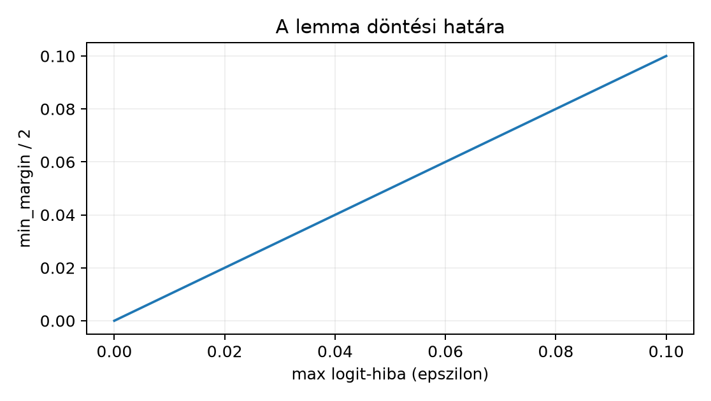

A 38.3. Végső teszt és páros korrupció
zárótesztje után rendelkezésre áll egy befagyasztott checkpoint, a clean
és corrupt teszt nyers logitjai, valamint a jelenetszintű bootstrap
intervallumok. Ebben az alfejezetben a kérdés már nem az, hogy a modell
tanult-e, hanem az, hogy a mentett állapotból egy új, a
tanítástól független processzben visszaállítható-e ugyanaz a
használati viselkedés. A programozói előismeret továbbra is a 38.3. Végső teszt és páros korrupció anyaga; a 37.4. Rétegből kis tanulómodell saját
rétegintegrációját csak annyiban idézzük vissza, hogy a mentett
paraméterek az nn.Module regisztrált paramétereiben élnek.
A 34.4. Teacher–student desztilláció
alfejezetből az eval() mód, a 26.4.
Detektálási pipeline és hibaelemzés alfejezetből a transzformált
input szerződésének gondolata öröklődik át.
Induló kérdés: ha valaki csak egy best.pt nevű fájlt kap
kézhez, hányféleképpen tudja félreértelmezni? A válasz a következő
szakaszban adott definíciókból következik: a súlyfájl önmagában nem
modell.
Definíció (state_dict). Egy PyTorch
nn.Module state_dict() visszatérési értéke
OrderedDict[str, Tensor], amely a regisztrált paramétereket
és a perzisztens puffereket tartalmazza a rétegnévvel
pontozott kulcsok alatt (a persistent=False jelzéssel
regisztrált pufferek kimaradnak). Egy konvolúciós modellben például
features.0.weight alakja
,
itt OIHW. A state_dict nem tartalmazza a
modellosztály kódját, a hiperparamétereket, a label mapet és az input
előfeldolgozást; ezért önmagában nem hordoz inference-szerződést
[D09].
Definíció (model id). A model_id egy
rögzített azonosító, amely egy architektúraosztályra, annak építési
paramétereire és a checkpointra együttesen hivatkozik. Itt:
glyphlab_convnet_v1. Ha az osztály kódja úgy változik, hogy
a state_dict kulcsai vagy a forward szemantikája
megváltozik, az azonosító önmagában nem véd meg; ezért a modellkártya az
architektúrafájlt is rögzíti.
Definíció (input schema). A GlyphLab-osztályozó bemeneti szerződése:
A batchméret
tetszőleges pozitív egész, de a két térbeli dimenzió és a csatornaszám
rögzített. A [0,1] tartomány alsó és felső korlátja a
generátor ADATOK.md szerződéséből jön; az
inference script ezt ellenőrzi is, nemcsak feltételezi.
Definíció (label map). A rendezett lista
és a modell logitjai között a osztályindex teremt kapcsolatot. A mentett logit tömbhöz külön el kell menteni -t, különben a 0, 1, 2 indexek jelentése visszafejthetetlen.
Definíció (preprocessing). A tanítás során az adat
már [0,1] float32 NCHW formában érkezett, így az inference
oldalon további normalizálás nincs. Ez nem véletlen: a normalizálást
akkor kell a modellkártyára írni, ha van. Egy későbbi uint8
bemenet esetén a 255-tel osztás a tanításkori tartományba
hozná a képet, de ezt külön szerződésként kell rögzíteni, nem
hallgatólagosan.
A fenti négy definícióból összeáll a modellkártya
minimális mezőkészlete. A laborban megadott model_card.json
ezt géppel olvashatóan rögzíti.
A levezetési kötelezettség itt egy pontos tolerancia- és környezetdefiníció. Először egy tisztán matematikai lemma, amely a logit-hibából predikciós egyezést ad.
Lemma (logit-margin elegendő feltétel top-1 egyezésre). Legyen két logitmátrix. Legyen
és minden -re legyen . Definiáljuk a referencia marginját:
Ha minden -re és
akkor minden -re .
Bizonyítás. Rögzítsünk egy -t. Tetszőleges osztályra a feltevésből
és a referencia-margin definíciójából
Ezért
A feltétel miatt , tehát
Így az egyértelmű a referencia győztesén. Ha sorában tie van, akkor , és a feltétel nem teljesülhet; a lemma ekkor nem állít semmit. ∎
A lemma bizonyított, de a gyakorlati visszatöltési kérdésre csak akkor alkalmazható, ha a betöltött modell tényleges logit-hibáját ismerjük. Ezért külön állításként rögzítjük a numerikus ellenőrzés kritériumát.
Kontrollállítás (környezeti, nem platformfüggetlen tétel). A visszatöltött modell akkor tekinthető a 38.3. Végső teszt és páros korrupció referenciafuttatással egyezőnek, ha az összes alábbi környezeti feltétel teljesül, és az (1)–(2) numerikus kritérium fennáll:
requirements.txt rögzíti ezt. Az
új processz CPU-t használ, float32 számítással.torch.set_num_threads(1) hívás történik a forward
előtt, hogy a redukciók sorrendje ne függjön a szálütemezéstől.model.eval() állapotba kerül,
és a forward torch.inference_mode() kontextusban fut; így
dropout nem aktív, BatchNorm running state nem frissül [D12, D09].models.py osztály byte-szinten azonos kódja
fut; ugyanaz az input bájtokig azonos np.ascontiguousarray
NCHW float32 tömbből jön.state_dict
paraméterei bitazonosak a minősített checkpoint paramétereivel.E feltételek mellett a visszatöltési ellenőrzés (1) kritériuma
pontosan a
np.allclose(logits, reference, rtol=1e-4, atol=1e-4) hívás
elemenkénti feltétele, ahol a második argumentum, a
referencia a viszonyítási alap:
Előfeltétel, hogy minden érték véges: NaN esetén az
allclose hamis, ezért a labor a végességet külön is
ellenőrzi. Ez a feltétel nem azonos egy külön abszolút korláttal:
például
,
mellett
,
tehát az allclose igaz, a
korlát viszont hamis. A (2) kritérium a lemma: ehhez külön kiszámítjuk a
tényleges
értéket, és ha a referencia marginokra
,
akkor a lemma garantálja a predikciós egyezést. A margin-feltétel
elégséges, nem szükséges: hamis értéke mellett is lehet egyezés, ezért a
labor nem tekinti automatikus eltérésnek. Maga a bitazonos logit-egyezés
nem ígért; a [D02] dokumentáció szerint platform és
verzió váltása megváltoztathatja a bitmintát, ezért a gyakorlatban a
tolerancia a szerződés, nem a bitazonosság. Ezt a pontot a kézirat nem
általános konvergencia-tételként, hanem a saját laborra vonatkozó
ellenőrzési protokollként közli.
Legyen a referencia
Az eltérésmátrix elemenként: , , , , , , tehát . A marginok:
Mivel , a lemma predikciós egyezést garantál; valóban mindkét sorban az 1. és 2. index marad a győztes.
Ellenkező irányba: ha a második sor logitjai
és
,
akkor
és
.
A
feltétel nem teljesül; a lemma nem alkalmazható, noha ebben a konkrét
esetben az
még egybeesik. A feltétel elegendő, nem szükséges. Ez a
különbség a gyakorlatban fontos: ha a script a margin-ellenőrzést
false értékkel jelenti, az nem automatikusan predikciós
eltérést jelent, hanem azt, hogy a hibahatár nem zárja ki azt.
A margin-döntési határt mutató ábra:

A labor kimenete a lab/PROJECTII/ könyvtár. Bemenete a
38.2.–38.3. választott
CNN-checkpointja, a lab/checkpoints/best_val_cnn.pt. Ez a
38.2. Modell, training és best checkpoint
burkolt sémáját követi (model_state_dict és metaadatok); az
átadási csomagba a súlyokat változtatás nélkül, puszta
state_dict-ként exportáljuk
models/best.pt néven, mert a független betöltőnek nincs
szüksége a tanítási metaadatokra, azok a modellkártyára kerülnek. Az
exportot, a referencia-logitokat és a kártya hash-ét a következő szkript
állítja elő a lab/ könyvtárból:
# lab/package_project2.py — n152: a n150/n151 checkpointjából átadható PROJECTII/ csomag.
# A n150 burkolt checkpointjából a súlyokat változtatás nélkül, puszta state_dictként
# exportálja; a model_card hash-ét és a referencia-logitokat a tényleges fájlból számolja.
import hashlib, json, shutil
from pathlib import Path
import numpy as np
import pandas as pd
import torch
from glyph_models import load_checkpoint
LAB = Path(__file__).resolve().parent
OUT = LAB / "PROJECTII"
def sha256_file(path):
h = hashlib.sha256()
with open(path, "rb") as f:
for chunk in iter(lambda: f.read(1 << 20), b""):
h.update(chunk)
return h.hexdigest()
def main():
model, ckpt = load_checkpoint(LAB / "checkpoints" / "best_val_cnn.pt")
(OUT / "models").mkdir(parents=True, exist_ok=True)
(OUT / "data").mkdir(exist_ok=True)
torch.save(model.state_dict(), OUT / "models" / "best.pt") # átadási formátum
shutil.copyfile(LAB / "data" / "images.npy", OUT / "data" / "images.npy")
meta = pd.read_csv(LAB / "data" / "metadata.csv")
test_idx = meta.index[meta["split"] == "test"].to_numpy().astype(np.int64)
np.save(OUT / "test_indices.npy", test_idx)
x = torch.from_numpy(np.load(LAB / "data" / "images.npy")[test_idx].astype(np.float32))
torch.set_num_threads(1)
with torch.inference_mode():
np.savez(OUT / "test_reference.npz", # referencia-logitok + globális index
logits=model(x).numpy().astype(np.float32), index=test_idx)
card = {
"model_id": "glyphlab_convnet_v1",
"architecture_module": "models.py",
"architecture_class": "GlyphLabConvNet",
"input_schema": {"dtype": "float32", "layout": "NCHW",
"shape": [None, 1, 24, 24], "value_range": [0.0, 1.0]},
"preprocessing": "nincs további normalizálás; a bemenő tömb már [0,1] float32 NCHW",
"label_map": ["vertical", "horizontal", "diagonal"],
"checkpoint_file": "models/best.pt",
"checkpoint_sha256": sha256_file(OUT / "models" / "best.pt"),
"source_checkpoint": {"file": "checkpoints/best_val_cnn.pt", "seed": ckpt["seed"],
"epoch": ckpt["epoch"], "val_loss": ckpt["val_loss"]},
"training_data": "GlyphLab 1.0, train 120 scene / 240 image, ket view",
"validation_scope": "csak GlyphLab szintetikus kepek; valos felhasznalas nem validalt",
"eval_protocol": "test_clean_60, paired corrupt, stratified scene bootstrap (n151)",
"pytorch_version": torch.__version__,
"torch_threads": 1,
}
(OUT / "model_card.json").write_text(json.dumps(card, indent=2, ensure_ascii=False) + "\n",
encoding="utf-8")
# a minősítő futtatás tényleges verziói (CPU-build esetén a "+cpu" helyi címke nélkül)
(OUT / "requirements.txt").write_text(
f"numpy=={np.__version__}\ntorch=={torch.__version__.split('+')[0]}\n", encoding="utf-8")
for name in ("models.py", "inference.py"):
assert (OUT / name).exists(), f"hiányzik a csomagból: {name}"
print(f"PROJECTII kész: sha256={card['checkpoint_sha256'][:16]}…, "
f"forrás seed={ckpt['seed']} epoch={ckpt['epoch']}")
if __name__ == "__main__":
main()A szkript a models/best.pt,
data/images.npy, test_indices.npy (alak
,
int64), test_reference.npz (logits:
float32, index: a hozzájuk tartozó
int64 globális indexek), model_card.json és
requirements.txt fájlokat írja; a models.py-t
és az inference.py-t az alábbi kódból kell a
PROJECTII/ könyvtárba menteni (a laborcsomagban már ott
vannak). Futtatás:
cd lab && python package_project2.py. Az átadandó
csomag:
models.py: a modellosztály,model_card.json: a szerződés géppel olvasható
formája,inference.py: független betöltő és batch-inference
parancs,requirements.txt: a környezet.A models.py:
# lab/PROJECTII/models.py
import torch
from torch import nn
class GlyphLabConvNet(nn.Module):
"""GlyphLab orientációs osztályozó; input NCHW (N,1,24,24), float32 [0,1]."""
def __init__(self):
super().__init__()
self.features = nn.Sequential(
nn.Conv2d(1, 8, kernel_size=3, padding=1),
nn.ReLU(),
nn.MaxPool2d(2),
nn.Conv2d(8, 16, kernel_size=3, padding=1),
nn.ReLU(),
nn.MaxPool2d(2),
)
self.classifier = nn.Sequential(
nn.Flatten(),
nn.Linear(16 * 6 * 6, 32),
nn.ReLU(),
nn.Linear(32, 3),
)
def forward(self, x: torch.Tensor) -> torch.Tensor:
return self.classifier(self.features(x))A model_card.json szerkezete (a hash-értéket, a
forrás-checkpoint adatait és a PyTorch-verziót a
package_project2.py a tényleges fájlokból tölti ki; itt a
mezőséma a tartalom):
{
"model_id": "glyphlab_convnet_v1",
"architecture_module": "models.py",
"architecture_class": "GlyphLabConvNet",
"input_schema": {
"dtype": "float32",
"layout": "NCHW",
"shape": [null, 1, 24, 24],
"value_range": [0.0, 1.0]
},
"preprocessing": "nincs további normalizálás; a bemenő tömb már [0,1] float32 NCHW",
"label_map": ["vertical", "horizontal", "diagonal"],
"checkpoint_file": "models/best.pt",
"checkpoint_sha256": "a_minositett_checkpoint_szamtott_sha256_erteke",
"source_checkpoint": {"file": "checkpoints/best_val_cnn.pt", "seed": 0, "epoch": 0, "val_loss": 0.0},
"training_data": "GlyphLab 1.0, train 120 scene / 240 image, ket view",
"validation_scope": "csak GlyphLab szintetikus kepek; valos felhasznalas nem validalt",
"eval_protocol": "test_clean_60, paired corrupt, stratified scene bootstrap (n151)",
"pytorch_version": "2.14.1+cpu",
"torch_threads": 1
}Az inference.py tömör változata:
# lab/PROJECTII/inference.py
import argparse, hashlib, json, sys
import numpy as np
import torch
from models import GlyphLabConvNet
def sha256_file(path):
h = hashlib.sha256()
with open(path, "rb") as f:
for chunk in iter(lambda: f.read(1 << 20), b""):
h.update(chunk)
return h.hexdigest()
def main():
ap = argparse.ArgumentParser()
ap.add_argument("--checkpoint", required=True)
ap.add_argument("--card", required=True)
ap.add_argument("--images", required=True)
ap.add_argument("--indices", required=True)
ap.add_argument("--reference", default=None)
ap.add_argument("--output", default="inference_results.json")
args = ap.parse_args()
torch.set_num_threads(1)
with open(args.card, "r", encoding="utf-8") as f:
card = json.load(f)
actual_hash = sha256_file(args.checkpoint)
if actual_hash != card["checkpoint_sha256"]:
print(f"checkpoint hash mismatch: {actual_hash}", file=sys.stderr)
sys.exit(1)
model = GlyphLabConvNet()
state = torch.load(args.checkpoint, map_location="cpu", weights_only=True)
model.load_state_dict(state)
model.eval()
images = np.load(args.images)
indices = np.load(args.indices).astype(np.int64)
x = np.ascontiguousarray(images[indices], dtype=np.float32)
schema = card["input_schema"]
assert x.ndim == 4 and tuple(x.shape[1:]) == tuple(schema["shape"][1:]), x.shape
assert x.min() >= schema["value_range"][0] - 1e-7
assert x.max() <= schema["value_range"][1] + 1e-7
with torch.inference_mode():
logits = model(torch.from_numpy(x)).numpy().astype(np.float32)
probs = np.exp(logits - logits.max(axis=1, keepdims=True))
probs /= probs.sum(axis=1, keepdims=True)
pred = np.argmax(logits, axis=1)
result = {
"model_id": card["model_id"],
"checkpoint_sha256": actual_hash,
"sha256_match": True,
"device": "cpu",
"dtype": "float32",
"input_count": int(x.shape[0]),
"predictions": pred.tolist(),
"probabilities": probs.tolist(),
"label_map": card["label_map"],
}
# Az inference sikere és a referencia-egyezés két külön dolog: az utóbbi csak
# akkor PASS, ha minden előírt ellenőrzés teljesül; FAIL esetén nemnulla kilépés.
status = "INFERENCE_OK"
if args.reference is not None:
ref = np.load(args.reference) # npz: "logits" és "index"
ref_logits, ref_index = ref["logits"], ref["index"].astype(np.int64)
checks = {
"shape_match": ref_logits.shape == logits.shape,
"index_match": bool(np.array_equal(ref_index, indices)),
"finite": bool(np.isfinite(logits).all() and np.isfinite(ref_logits).all()),
}
if all(checks.values()):
eps = float(np.max(np.abs(logits - ref_logits)))
# np.allclose: |a - b| <= atol + rtol * |b| elemenként, b a referencia
checks["logit_allclose"] = bool(np.allclose(logits, ref_logits, rtol=1e-4, atol=1e-4))
ref_pred = np.argmax(ref_logits, axis=1)
checks["top1_match"] = bool(np.array_equal(pred, ref_pred))
top2 = np.sort(ref_logits, axis=1)[:, -2:]
margins = top2[:, 1] - top2[:, 0]
result.update({
"max_abs_logit_diff": eps,
"min_reference_margin": float(margins.min()),
# a lemma elégséges feltétele; hamis értéke nem jelent automatikusan eltérést
"margin_sufficient": bool((margins > 2 * eps).all()),
})
result["checks"] = checks
status = "PASS" if all(checks.values()) else "FAIL"
result["status"] = status
with open(args.output, "w", encoding="utf-8") as f:
json.dump(result, f, indent=2)
print(f"{status} -> {args.output}")
if status == "FAIL":
sys.exit(2)
if __name__ == "__main__":
main()A futtatási parancs új processzben:
cd PROJECTII
python inference.py \
--checkpoint models/best.pt \
--card model_card.json \
--images data/images.npy \
--indices test_indices.npy \
--reference test_reference.npz \
--output inference_results.jsonAz értelmezés három szintű, és mindhárom csak akkor értelmezhető, ha
a referencia alakja, indexei és végessége előbb ellenőrzött
(shape_match, index_match,
finite); az inference sikere (INFERENCE_OK) és
az egyezésvizsgálat sikere (PASS) két külön státusz. A
legegyszerűbb a sha256_match igazsága: a
betöltött fájl bitazonos a minősített checkpoint-pal. A
második a logit_allclose igazsága a fenti
toleranciával; ez a környezeti kontrollállítás gyakorlati
visszaigazolása. A harmadik a
margin_sufficient igazsága, amely a lemma feltételét
ellenőrzi a tényleges maximális logit-hibára. Ha mindhárom igaz, a top-1
predikciós egyezés matematikailag garantált a referenciafutáshoz képest.
Futási jegyzőkönyv. A 38.2.–38.3. fenti futásából (CNN, seed 20261022, 19.
epoch) a package_project2.py, majd új processzben az
inference.py lefutott: status =
PASS, a checks mind igaz
(shape_match, index_match,
finite, logit_allclose,
top1_match), max_abs_logit_diff =
0.0, min_reference_margin
,
margin_sufficient = true, kilépési kód 0.
Szándékosan hibás referenciákkal ugyanez a parancs FAIL-t
és 2-es kilépési kódot ad: tíz soros referencia mellett a
shape_match és az index_match,
NaN-t tartalmazó referencia mellett a finite,
minden logitban
-gyel
eltolt referencia mellett a logit_allclose, fordított
indexsorrend mellett az index_match bukik. Az azonos gépen,
azonos szálszámmal futó betöltés bitazonos logitokat adott; más CPU vagy
más PyTorch-verzió mellett a
tolerancia és a margófeltétel a mérvadó.
F1 (fogalmi, nehézség 1). Magyarázd el, miért nem
elegendő pusztán a state_dict átadása egy független
inference-hez. Sorold fel azt a három hiányzó szerződéselemet, amelyek
nélkül a betöltött súlyok félreértelmezhetők. Elvárt átadandó eredmény:
saját szavas magyarázat, minden hiányzó elemhez egy-egy konkrét
félreértési példa.
F2 (levezetési/bizonyítási, nehézség 2). Adott a referencia és a betöltött . Számold ki -t, a soronkénti margókat, és döntsd el a lemma alapján, garantált-e a top-1 egyezés. Utána adj olyan -t, amelyre a lemma feltétele nem teljesül, és mutasd meg, ott miért nem következtethetünk az -egyezésre. Elvárt átadandó eredmény: minden közbülső szám, a feltétel kiértékelése és az ellenpélda indoklása.
F3 (implementációs, nehézség 2). Írj
load_bundle(bundle_dir) függvényt, amely beolvassa a
model_card.json-t, ellenőrzi a checkpoint SHA-256 értékét a
kártyán lévővel, betölti a state_dict-ot weights_only=True
módon, eval() módba állítja a modellt, és visszaadja a
(model, card) párt. Hibás hash esetén dobjon
ValueError-t. A függvény ne olvasson be képadatot. Elvárt
átadandó eredmény: futtatható kód, egy helyes és egy meghamisított
checkpoint esetén a várt kimenet.
F4 (hibakeresési, nehézség 2). Egy hallgató a
következő inference kódot írta: a checkpointot
torch.load(path, weights_only=False)-szal tölti be;
betöltés után model.train()-t hív; a képtömböt
x.reshape(N, 24, 24, 1) alakban adja a modellnek.
Azonosítsd mindhárom hiba lehetséges következményét, javítsd a kódot, és
add meg azt a kontrollt, amellyel a javítás ellenőrizhető. Elvárt
átadandó eredmény: ok–következmény–javítás hármas mindhárom hibára, és
egy futtatható ellenőrző sor.
F5 (kísérleti/transzfer, nehézség 3). Egy másik
labor uint8 JPEG-képekből szeretné használni a modellt egy
hasonlónak látszó vonalorientációs feladatra. Tervezz protokollt, amely
(a) a modellkártyát kiegészíti a szükséges új preprocessinggel és
domain-korláttal, (b) baseline-t és metrikát ad a transzfer előtt, (c)
meghatározza, mikor szabad a mentett modellt egyáltalán kiértékelni.
Elvárt átadandó eredmény: protokollfejezetek, egy baseline, egy metrika
és az érvényességi korlát pontos megfogalmazása.
F1 megoldásminta. A state_dict csak
paraméter- és perzisztens puffertensorokat tartalmaz, nem hordozza az
architektúraosztály kódját. Egy Conv2d(1,8,3) és egy
Conv2d(1,8,5) súlyai nem tölthetők át
egymásba, mert az alakjuk eltér
(
vs. ),
és a load_state_dict hibát ad; a valódi veszély az azonos
súlyalakú, de eltérő szemantikájú architektúra. Például egy
Conv2d(1,8,3,stride=1,padding=1) és egy
Conv2d(1,8,3,stride=2,padding=0) súlya azonos alakú és
kulcsú, a betöltés hiba nélkül sikerül, a kimeneti térkép mérete és
tartalma viszont más; ugyanígy egy ReLU helyett Tanh-ot használó osztály
is ugyanazt a state_dict-et fogadja. Nem tartalmazza az
input sémát: ha a betöltő HWCN alakot ad be, az
(N,24,24,1)-et a modell
csatornás bemenetként értelmezheti, shape-hibával vagy hibás
eredménnyel. Nem tartalmazza a label mapet: a 0,1,2 indexek
jelentése a tanító adatban rögzített, nem a súlyokban.
F2 megoldás. Eltérések: , tehát . Margók: , . , és , tehát a lemma garantálja az egyezést. Ellenpélda: . Ekkor ; ? Nem, az első sornál , a teljes feltételhez kell, de , ezért nem teljesül. Az valóban átbillen: a referencia első sora az 1. indexet adja, a betöltött pedig a 0. indexet. Ez azt is mutatja, hogy a lemma feltételének megsértése valós predikciós fordulattal járhat, nem puszta formalitás.
F3 megoldásminta. A függvény a labor
inference.py-jából kiemelhető; a kulcslépések:
import hashlib, json, pathlib, torch
from models import GlyphLabConvNet
def sha256_file(p):
h = hashlib.sha256()
with open(p, "rb") as f:
for chunk in iter(lambda: f.read(1 << 20), b""):
h.update(chunk)
return h.hexdigest()
def load_bundle(bundle_dir):
bundle = pathlib.Path(bundle_dir)
with open(bundle / "model_card.json", encoding="utf-8") as f:
card = json.load(f)
ckpt = bundle / card["checkpoint_file"]
actual = sha256_file(ckpt)
if actual != card["checkpoint_sha256"]:
raise ValueError(f"checkpoint hash mismatch: {actual}")
model = GlyphLabConvNet()
state = torch.load(ckpt, map_location="cpu", weights_only=True)
model.load_state_dict(state)
model.eval()
return model, cardAlakellenőrzés: a betöltött state minden kulcsa szerepel
a frissen épített modell state_dict()-jában; a
load_state_dict(strict=True) (alapértelmezés) ezt
kikényszeríti. Szélsőeset: hiányzó fájl FileNotFoundError;
érvénytelen JSON json.JSONDecodeError; mindkettő a hívónál
kezelendő, nem nyelhető el.
F4 megoldás. (1) weights_only=False
biztonsági hiba: a checkpoint pickle tetszőleges Python-objektumot
futtathat betöltéskor; a javítás weights_only=True, és csak
saját, megbízható checkpoint betöltése [D09]. (2)
model.train() aktiválhatja a dropoutot, illetve BatchNorm
esetén az eval-statisztikától eltérő viselkedést ad; a javítás
model.eval() betöltés után. (3) A
reshape(N,24,24,1) HWCN alakot ad; a modell NCHW-t vár, így
a csatornadimenzió 24 lesz, ami shape-hibát vagy hibás konvolúciót okoz.
A javítás np.transpose(x, (0,3,1,2)) vagy közvetlen
np.ascontiguousarray(x, dtype=np.float32) a helyes NCHW
forrásból. Ellenőrzés: a javított kód a labor --reference
argumentumával logit_allclose=true és
top1_match=true értéket ad.
F5 megoldásminta. Egy lehetséges protokoll:
uint8-ból
float32 [0,1] tartományba kell hozni; ezt a
modellkártya preprocessing mezőjébe fel kell venni. A
színképeket szürkeárnyalatosítani kell, vagy explicit döntést hozni
arról, hogy a 3 csatornás bemenetet a modell nem támogatja.validation_scope
mező ilyenkor "GlyphLab + az uj domain neve" értékre bővül,
és a jelentésben külön sorban szerepel, hogy a korábbi benchmark nem
erre a domainre szól. A protokoll nem ígérhet előre győztest; negatív
eredmény is elfogadható.A leggyakoribb érvelési hiba: „A modell a GlyphLab teszten
pontosságot ért el, tehát a mentett checkpoint önmagában alkalmazási
engedély.” Ez a validation_scope és az alkalmazási
jóváhagyás összemosása. A GlyphLab szintetikus vonalorientációs adat;
egy valós vagy más domainhez tartozó képosztályozási feladat más
előfordulási arányokkal, más háttérrel és más címkeértelmezéssel
rendelkezhet. A modellkártya ezért tartalmazza a
"validation_scope": "csak GlyphLab szintetikus kepek; valos felhasznalas nem validalt"
mezőt. Ha egy felhasználó ezt a mezőt figyelmen kívül hagyva valós
orvosi vagy üzleti döntéshez használja a modellt, a hiba nem a
checkpoint betöltésében, hanem a szerződés megsértésében van. A
benchmark eredménye tudományos bizonyíték a saját adatfelosztáson belül;
valós engedélyhez külön domain-validáció, külső adat és döntési küszöb
szükséges.
Ellenőrizd: (1) Meg tudod-e mondani, miért eval() és
inference_mode() együtt szükséges? (2) A labor
margin_sufficient mezője false; jelent-e ez
automatikusan predikciós eltérést? (3) Miért nem elég a
model_id szöveg, ha az models.py változott?
Visszahívás a 37.4. Rétegből kis tanulómodell
alfejezetből: a saját réteg integritása az nn.Parameter
regisztráción múlt; a mentett state_dict most ugyanazt a
regisztrációt használja a betöltés oldalán. A 34.4.
Teacher–student desztilláció alfejezetből: a tanár kiértékelése
eval() módban futott; ugyanez a mód most a checkpoint
visszaállításának feltétele. A 26.4. Detektálási
pipeline és hibaelemzés alfejezetből: a detektálási pipeline a
transzformált koordinátákat szinkronban tartotta; itt az input séma
ellenőrzése ugyanolyan szerződéses védelem.
A független inference nem a state_dict betöltésével
kezdődik, hanem a modellkártya szerződésével: architektúraosztály, input
séma, label map, preprocessing és érvényességi kör. A visszatöltés
ellenőrzése két rétegű: a checkpoint SHA-256 egyezése bitazonos
paramétereket garantál, a logit-eltérésre pedig a fent rögzített,
CPU-float32 környezetben értelmezett
tolerancia vonatkozik. A margin-lemma a logit-hibából elegendő feltételt
ad a top-1 egyezésre, de nem szükséges. A labor átadja a futtatható
inference.py-t és a modellkártyát; a kimeneti JSON a hash-,
logit- és predikciós szinteket külön mezőkben jelenti.
A 39.1. Feladat- és annotációs döntés Projekt III-ban a szegmentálási vagy lokalizációs feladat annotációs döntését készítjük elő; az itt bemutatott modellkártya és inference-szerződés mintája lesz annak az alkalmazási riportnak, amely a mentett modell átadását az új feladathoz köti.